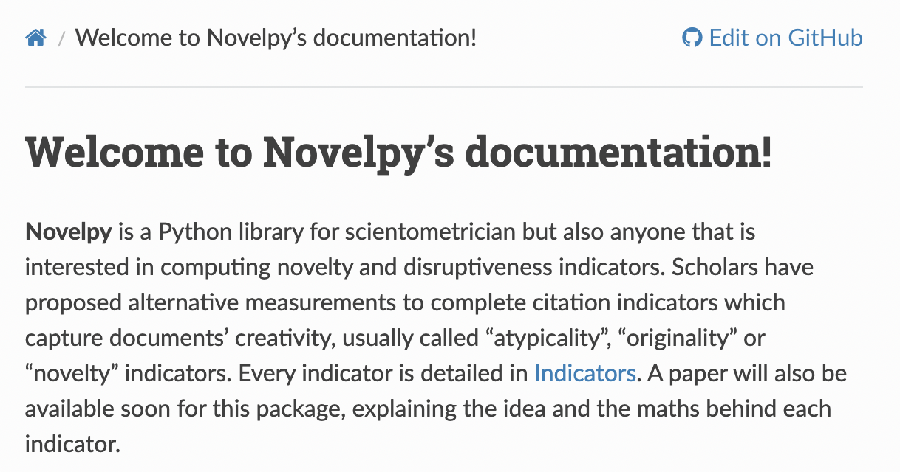
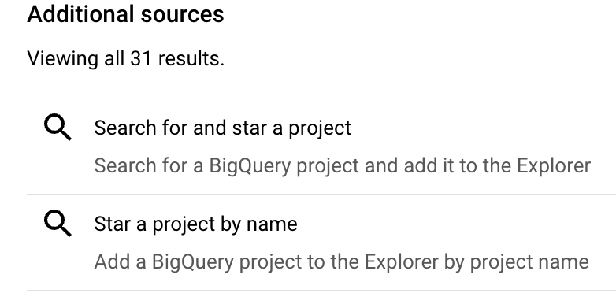
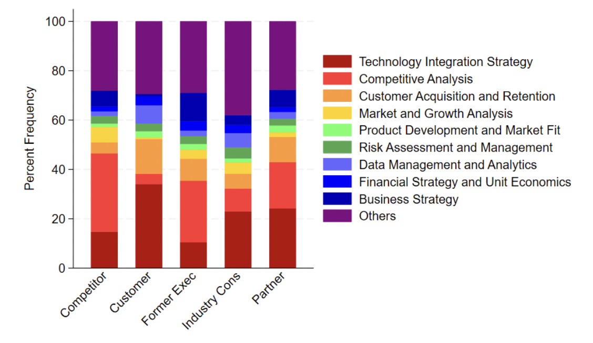
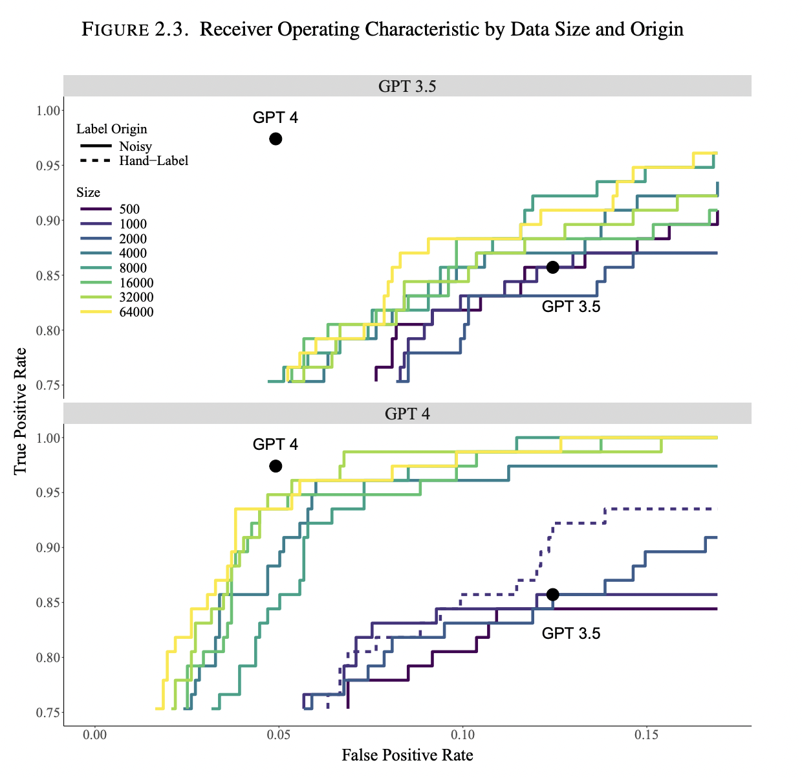
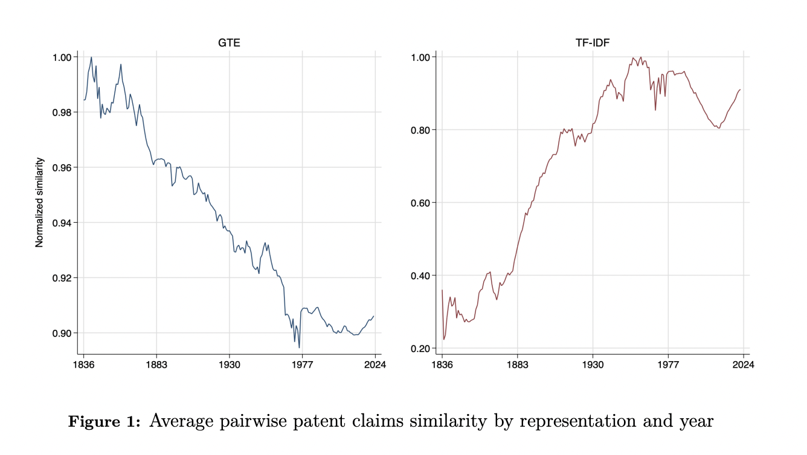
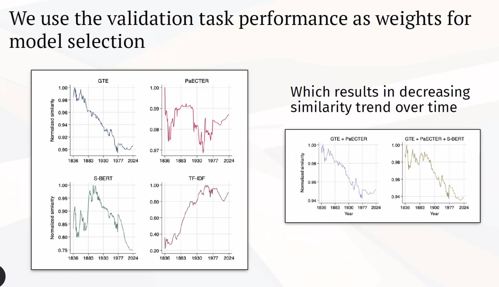
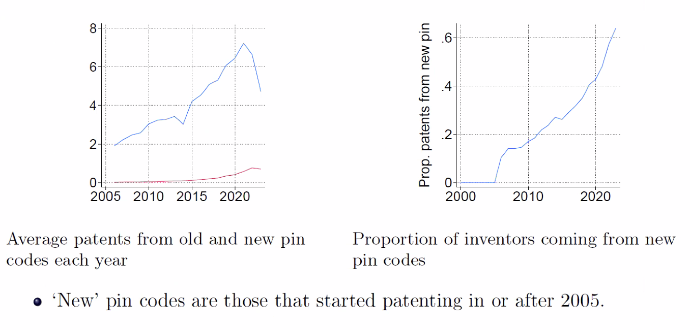
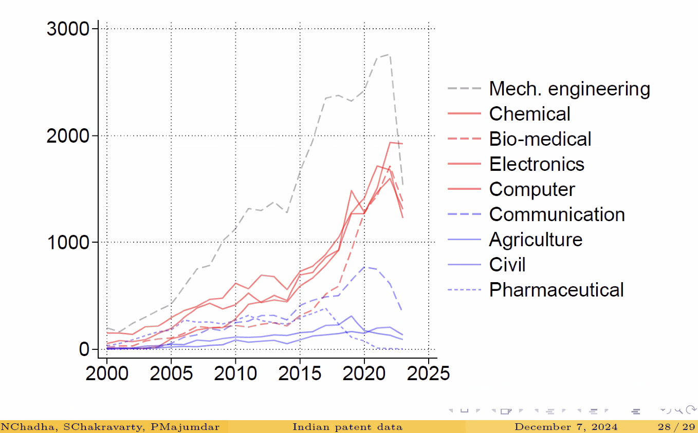

2024 Technical Working Group meeting
December 2024 meeting of the I3 TWG
December 6-7, 2024
Friday, December 6
4:00 pm: Welcome: YouTube broadcast, Zoom, code of conduct
4:15 New Ventures, Products, and Tools
5:45 I3 updates and announcements
4:15 New Ventures, Products, and Tools
Database, Methodological Tools, and Research Opportunities: Creative Destruction Lab and Early-Stage Technology Ventures

Amir Sariri (Purdue University), Avi Goldfarb (University of Toronto, NBER)
Creative Destruction lab: our relational db has 200 linked datasets. Such as a table for meeting notes, w/ granularly linked statements from participants, giving us comment-level data
Examples:

This work in information friction was an RCT.
Discussion:
Q: How are mentors recruited for your mentorship system?
A: Initially, this was via networks of the program founders.
Q: I love seeing this data; our first entrepreneurship dataset ever! (well, there’s a 2013 dataset from crunchbase, but that’s it) Tell me more about [the long tail?]
A: We have application data (for things other than the final vetted applications), it is not as good. We don’t follow up with them b/c they’re not in the program. Be cautious in interpreting that data.
New Products

Abhiroop Mukherjee (HKUST), Bruno Pellegrino (Columbia University), Alminas Zaldokas (NUS), Yiman Ren (University of Michigan), Tomas Thornquist (Shell Street Labs)
When a successful new product comes out, we want to look at the change in consumer surplus and the effect on other firms, to see the overall welfare impact. But GDP growth misses this, mainly capturing the increase in existing varieties.
Our approach is threefold: - build a database of new product introductions, - estimate the profits from these introductions captured by firms, and - estimate spillovers and consumer surplus
Discussion:
Q: Do you study robustness of results around the window you choose around the product announcement? (the market takes time)
A: Yes, thankfully we have the announcement date which is unambiguous. We see clear discontinuities. With a longer window, the effect gets bigger. (market also anticipates)
Q: Why not run event studies with competitors?
A: If you run events firm by firm, you’ll get N^2 studies per year, 25M from 5k competitors. This way we can compute spillovers in closed form w/o looking at those imprecise crossover events.
Q: What about unpriced spillovers? I would have guessed we’re also interested in knowledge spillovers, which may happen in other years vs contemporaneous. Are you looking only at price information?
A: Knowledge spillovers may be there, we’re not looking at those. This may be more relevant for patents than new products. Our model by construction can’t capture that.
Q: About interpretation: what’s the difference between the change in firm profits vs the change across their market happening to all firms in the market?
A: Yes, we are all playing an oligopoly game, everyone adjusts their output and prices. Equilibrium pricing effects should already be taken into account.
Q: If you’re only looking at ‘winners’, are the results here inflated?
A: We’re careful about who we call winners. If a product was not expected to be successful by the market, the normal return would be close to zero. We don’t use the average across all firms; each product-introduction has its own abnormal return.
Q: In the patent paper, the average return is essentially zero. They do a trip to convert negative returns into positive numbers, so the return to a patent is bounded at zero. You have larger average returns but presumably got negatives — what do you do with them? Are they still negative, or do you transform them so the value is bounded at 0?
A: In the paper, there’s a signal connected to the patent, which could be positive or negative. They make a distributional assumption, and have a bayesian technique to recover expected signal from the return. We do the same thing, but have a better signal-to-noise ratio, b/c we have a sharp announcement date.
Novelpy: A Python Package to Measure Novelty and Disruptiveness

Pierre Pelletier, Kevin Wirtz (University of Strasbourg)
We want to quantify novelty and disruptiveness in science. This underpins peer recogntion and has played a crucial role in science and tech policy. We propose Novelpy, an open source tool that estimates both of these, and displays it graphically, to advance the science of science.

For disruptiveness, we look at the citation network, and 6 different indicators of disruptiveness. Each one has its critics, so we offer the set of all indicators and let the users decide what to do with the results.
In related work, we have previously estimated cognitive diversity and its impact on novelty and impact, looking at PubMed publiations. (Sails and Anchors, 2023)
Discussion:
Q: You’ve run this on PubMed, using abstracts and mesh terms. I work with OpenAlex; it sounds like I could do a preprocessing step to take whatever dataset I want to use, and run your code on it. Is that the way to think about it?
A: Yes, exactly.
Q: Say you run across edge cases in your citation network, like 50 references to the same source, or excess self-cites, or a quirk in the source that messed up the citations. Do you have any features that note these issues? A way to flag that someone should doublecheck?
A: We only check that you have at least 3 references to be included. Each source of papers might have different quirks (in the dataset), we haven’t tried to address this.
5:45 I3 updates and announcements
Introducing the I3 BigQuery Data Repository
Dror Shvadron (University of Toronto), on zoom
This is a work in progress that we’ve been thinking about for a while. Dror, take it away!
Something challenging in our field is we work with large datasets, hard to work with in their original raw form. OpenAlex is 1.5TB. Downloading, grasping its structure, manipulating it, cleaning up discrepancies, merging it with other: all of that takes time, and tacit knowledge to do efficiently.
Not everyone has the ability to do this, so it’s a barrier to making progress and sharing it with people around the world. This project is trying to extend I3 from identifying the datasets to making it easy to work with, using BigQuery. Allowing data processing (in the cloud) at scale, in a reproducible way.


Log into BigQuery from Google Cloud, select +Add a project in the Explorer menu, choose Star a project by name, and use the project name nber-i3.
Then you’ll be able to browse and query the nber-i3 datasets.
There will also be a google group for i3-bigquery (not yet publicly visible)
Introducing the 2025 I3 Fellows!
Bhaven Sampat
This is the second year of supporting I3 fellows, after an excellent showing last year and interest in expanding the program. We want to welcome our 7 new fellows, all working on open datasets: Laura Shupp, Rebekah Dix, Mihai Codreanu, Tianshu Lyu, Guilherme Junqueira, Kyoungah Noh, and Matthew Lee Chen. Six of them were able to make it to attend the workshop in person! Please say hello and ask them about their work if you see them.
6:15 pm — Dinner reception
Saturday, December 7
9:00 Building Datasets with LLMs 10:45 Comparative NLP Methods 11:45 Global Patent Data
9:00 Building Datasets with LLMs
LLM-based Topic Modeling

Victor Lyonnet (University of Michigan), Amin Shams, Shaojun Zhang (The Ohio State University)
We analyzed 6,800 expert consultation calls from 1,700+ companies, and tried to quantify topic-specific sentiment and extract signals predictive of the resulting deal outcome.
We used LLMs to help with these steps. (GPT4 via UMich Azure account). LMs can help because the transcripts are complex, with intricate structure, and topic-level sentiment rather than document-level sentiment; hard for traditional LDAs. There are important caveats here: prompt word choice can easily bias the results.
Topic modeling: we generate them from a 20% sample, cluster and standardize them, then assign them to all transcripts. We see that topics vary a lot by sector, for instance drinks and beverages focus a lot on the competitive market.

We find that many topics have low predictive power, but a few (positive discussion of technology, positive customer signal) are strongly predictive.
Discussion:
Q: Working with ChatGPT style LLMs I’ve found problems increase with larger texts. If you are working with 3 hour transcripts, how do you deal with this?
A: Depends on how specifically you define a prompt. The more you want to find fine-grained features of individual paragraphs or pages, the more we found this is an issue.
A Robust Green Patent Database
Yuan Sun (Shanghai University of Finance and Economics), Xuan Tian, Yuanchen Yang (Tsinghua University)
An easy way to find green patents is through CPC and EPO labels for sustainable tech. We looked at 580K patents with labels that were associated with green patents. This included CPC classes that are potentially underrepresented in existing catalogs of green patents, expanding on the EPO’s Y02 classification. We used GPT 4o-mini to initially assess patents for whether they were ‘green’. 19% of Y02 patents were assessed at low confidence for being green, while an additional 13% of identified green patents were not in Y02.
Then we compiled a training dataset from these initial assessments, with twice as many negative as positive examples. Finally, we produced detailed descriptions of each patent using GPT 4o-latest.
Issues we faced: we validated each step across different models to find the most efficient one that did what we needed, to keep costs down. Wanted all steps to fit into a mobile device, limiting the need to check a website.
Code is open: see yuanresearch/Robust-Green-Patents-Paper You need to use your own API token
Discussion:
Q: Did you compare this approach across green frameworks?
A: I think that’s the next step. We did only 100 samples here. This db should include all green innovations worldwide; we started with transportation patents. The framework has the potential to expand.
Q: How robust do you expect this classification to be over time?
A: It should get better over time as we refine the model. Q: (But was the question about whether a single model would be persistently good across years, compare to how CPC codes are applied?)
Q: How sensitive was this work on the choice of CPC codes at the start?
Q: Some patents are for a technology that is ambiguously related to environmental sustainability. Is a traffic-efficiency tool that increases the demand for driving good or bad for the environment? Are LLMs good or bad at this nuance?
Distilling Data from Large Language Models
Maya Durvasula, Sabri Eyuboglu, David Micha. Ritzwoller (Stanford University)
We want to collect and organize public information about the design and outcomes of pharma clinical trials.
Working with clinicaltrials.gov and PubMed was not always straightforward. About 3000 sponsors haven’t fully published trial results, some proprietary databases take public db’s as an input, and it’s hard to tell whether the changes in them result from updated reporting, or their interpretation and cleaning.
Technical results: we can get comparable effects to using the most advanced ChatGPT, by using LLMs with the transparency and reproducibility of open source models, at 3% of the cost. Our model was superior than 7 traditional regressions, on measure of both true and false positive rates (but especially the latter).
Asides: There are 7 tags for clinical trials. Many other studies only use one of the 7. There are many ways to break down this data, and tell stories about it.
Constructing a task-specific LM:
A custom model was constructed using model distillation. First hand-labeling 3k labels, wrote a range of prompts, asked GPT-3.5 and -4 to extract noisy labels, and fine-tuned a set of open source models.
This was used to label a large corpus, far larger than we would have been able to do with the commercial models. And identified a larger set of clinical trials than included in some other sources, suggesting for instance the rate is not decreasing.

Discussion:
Q: We know we face publication bias. Denominator of unpublished studies can be large. Do your results speak to that?
A: In constructing the data, we tried to exclude reanalysis by multiple pubs. We don’t think publication bias is itself shifting over this time frame, in a way that would change the trends we observed.
Q: You reflected on implications for research. What are the implications for reporting guidelines, at the reporting stage?
A: A lot of people are thinking about policy here. Two strands: since 2007, all sponsors have to register their studies; since 2017, every sponsor under the FDA auspices has to report results. The FDA has not yet imposed penalties however for non-compliance. The FDAAA Trials Tracker tracks how much money the FDA could have collected had they enforced existing policy and listed fines.
Q: User request: as the first person to fork your github repo, can you add the NCT Number?
A: Yes, if we’ve extracted it we can. (ed: short and sweet!)
10:45 Comparative NLP Methods
Tracing the Flow of Knowledge From Science to Technology

Dietmar Harhoff, Michael E. Rose, Mainak Ghosh, Sebastian Erhardt, Erik Buunk (Max Planck Institute for Innovation and Competition)
This is about LLMs for patents and science, working through some traditional challenges with the benefit of a model.
Early models e.g. BERT didn’t have all terms related to horses. So you would miss some horse-related patents or research. Then came Pat-SPECTER (fine-tuning SPECTER on pats) and Pub-PaECTER (fine-tuning PaECTER on publications), drawing on Semantic Scholar.
This project created a ‘racing ground’ : for a given patent, rank 30 other publications by similarity. 1000 randomly-selected patents, 5 cited pubs, 25 non-cited pubs. SPECTER and Pat-SPECTER performed well.
Applications: separate patent-paper pairs from patent-paper citations, predict patent-paaper pairs, prior art search for earlier pubs. Making use of logic-mill.net and existing databases of works.
You can see the latest examples at logic-mill, and our huggingface repo.
Discussion:
Q: People used to use GROBID to extract data like this. Can I use LLMs for this now?
A: It can help. We need an English abstract to do it. So if you have a Springer article, which doesn’t share abstracts, it’s harder. The next gen of logic-mill will add Scopus abstracts.
Patent Text and Long-Run Innovation Dynamics
Ina Ganguli (UMass Amherst, NBER), Jeffrey Lin, Vitaly Meursault (Federal Reserve Bank of Philadelphia), Nicholas F. Reynolds (University of Essex)
Here are two graphs over two centuries showing “evolution of similarity”, using the same conceptual measure of similarity but different ways of assigning models to text (GTE vs TF-IDF):

Instead: try choosing a model using validation tasks. A handful of cases that can serve as a gold standard (we saw examples earlier today). We can start with patent-interference cases, and look for complementary tests.
3 validation tasks: - Patent Interference (we are very excited about this) - Human validation (economists should be doing much more of this!) - Classification
Performance: PaECTER, GTE, and S-BERT do best on different tasks. Pre-BERT models aren’t competitive, but can be more interpretable. The meta-model of ‘using validation tasks’ is a clear winner, but the specific models used has no clear winner. (and may lead to different conclusions)
Discussion:

Q: I would expect these graphs to be smoother, given the size of the corpus; what does it mean when there are jumps over the course of a year?
11:45 Global Patent Data
A New Database of Indian Patents

Nishant Chadha (Indian School of Business), Satyaki Chakravarty (Universita Cattolica del Sacro Cuore), Piyasha Majumdar (India Development Foundation)
We compile a patent-location database, using the database of inventors and a post code for 85% of them.
You get a status page of where each application is in its process. And you can use this to render a county-level map.
Patents filed per region:

Patents filed per sector:

Discussion:
Problems: authors IPs are sometimes blocked by the government; and they need a bigger machine.
Q: You said you renew patents every year. Is that just bureaucracy?
A: It’s very cheap, you just tell someone to renew it for the next year. Some are not renewed. Renewal is studied more in the US, less in India to date.
Comment: Really unfortunate it’s not on PatStat b/c we don’t have the families as a result. There is priority data, but these samples don’t have a priority date. (only 60% have one) Numbers are messy, they take the original #s from offices that have thousands of variations. But we could clean that to get priority information.
Q: About pharmaceutical research — After TRIPS, will patenting strategies change b/c jurisdiction specific distinctions about what is eligible will change? Chem and bio markets are interesting, India allows some drugs there first.
Q: Is it possible to link clinical trial databases also? From India drug approval
A: I don’t know where to find those. If you have that info, it would be another big task to do.
Creating the China Patent Dataset

Josh Lerner (Harvard, NBER), Namrata Narain (Harvard), Dimitris Papanikolaou (Northwestern, NBER), Amit Seru (Stanford, NBER)
Presenting a new China patent dataset, tracking the growth in patenting there and its implications for studying innovation.
There are prominent examples of product that could have been foreseen or predicted by watching the growth of patents in certain areas. For instance a hypersonic missile that seemed to have caught US military by surprise, where there had been years of extremely high rates of patenting hypersonic technologies.

We hope to go live with this database next year. It includes all patents, whether granted or not, from many sources: leading to 16M patents after cleaning and deduping, with translated assignee names, tags, and non-cite measures of patent quality. It needs TLC before turning it over for full public use. Trying to resolve links to classifications of critical technologies, to identify relative positioning of US and Chinese industries over time.
Discussion:
Q: Does your Chinese utility patent analysis distinguish between invention patents and utility model patents?
A: Yes. That’s the first filter. What they call “utility patents” are the second-class ones in China, to make things confusing. We in the interest of simplicity have focused on their top-class patents, not on their second-tier patents.
Q: Do you look at propensity to file in the US?
A: In process. We’ve looked at it within critical-tech contexts as well. We want to know whether, as econ theories would predict, that the best patents per our metric are more likely to be cross-patented. With a caveat about secrecy in some cases.
Q: Did you try to validate against Patsnap?
A: We pursued that early on: whether commercial or semi-commercial databases out there should be used. We had a couple concerns. We wanted to make something that is fully public, open and unencumbered by licensing requirements (such as PatStat and Google Patents). And felt that many of these commercial tools were mainly deriving the information they offered from public data.
Q: Foreign investment into the chinese economy has declined sharply since 2021. Do you see similar contraction in patenting? Do recent shifts in VC investment change what you’re seeing?
A: We’ve been thinking more about constructing the dataset in the past 18mo. But the general thing one hears from the vc community is the environment has moved from a system that mirrored the US, to one where that has dried up considerably and most money comes from the Chinese government, with strings attached. A: Some of the changes in 2018 which led to many funders departing (specific to US funding) we should be able to trace in our data.
Comment: It would be interesting for policymakers if there were a study on the impact of China’s Technology Import and Export Administration Regulations (TIER), which allowed China to capture US technology.
A Novel Dataset for Historical Innovation Studies: Linking USPTO Patents and US Census Data from 1850 to 1940
Zenne Hellinga (Utrecht University), Jay Praka. Nagar (Duke University), Stefano Breschi (Bocconi University), Andrea Morrison (University of Pavia), Gianluca Tarasconi (IPQuants)
This dataset is a work in progress, we are happy to release it and your feedback is welcome! Recently more papers have looked at historical patents to see long-term trends, but lack information on inventor backgrounds: families, occupation, birthplace. Some studies have linked inventors to census data, but these vary greatly in matching strategy, coverage [and granularity].
This is an effort to make a publicly available linked dataset with maximal coverage, and compare it to existing datasets. Starting with Google Patents, Census (trying to link across census decades)…

1:15 pm — Lunch !
Original content published on PubPub under Creative Commons Attribution 4.0 International License (CC-BY 4.0)